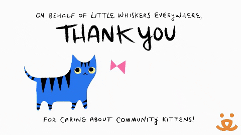
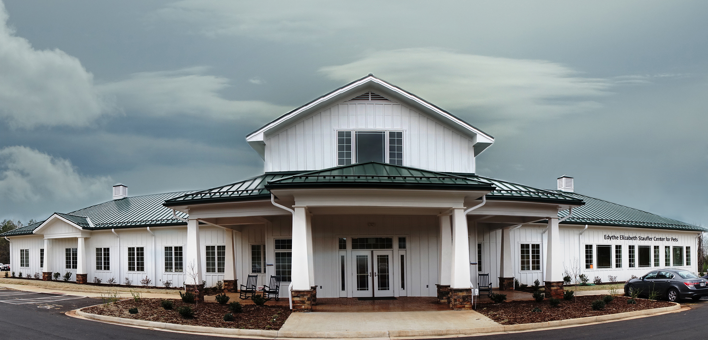
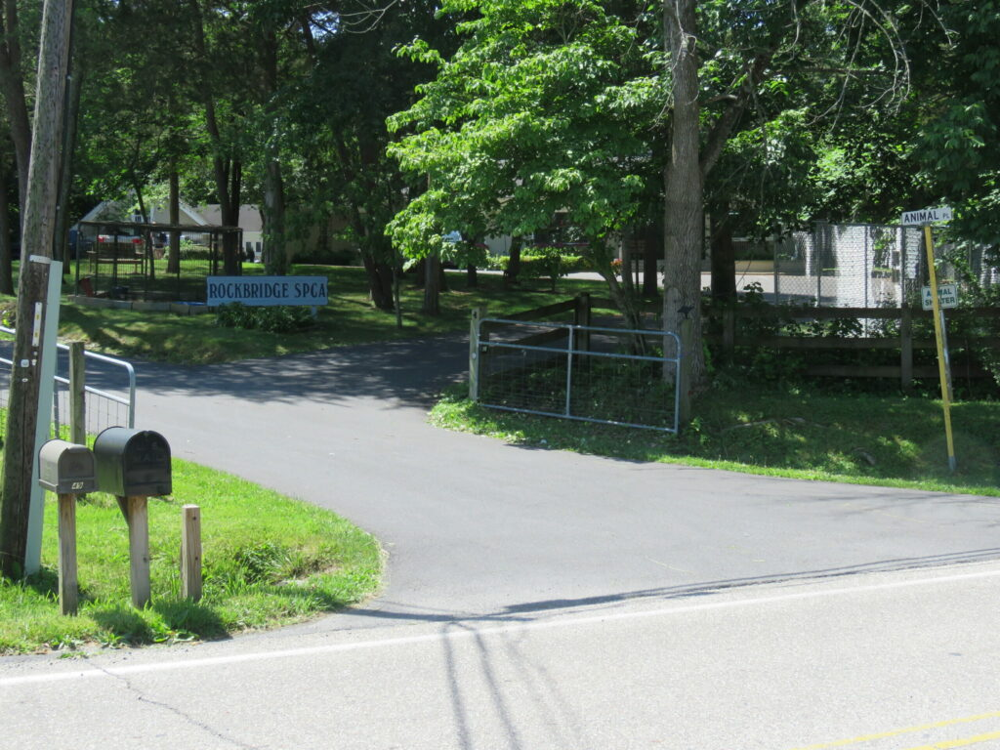
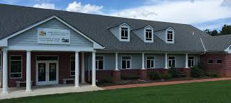

Step into a whimsical world of whiskers, where melodious meows and mischievous antics reign supreme! Considering adding a feline friend to your life? Brace yourself for a playful journey brimming with surprises, snuggles, and an abundance of purrs!
But beyond the fluffy antics lies a profound truth: cats have a remarkable ability to bring joy, comfort, and companionship into our lives. Amidst the hustle and bustle of daily life, they offer a sanctuary of serenity, their gentle purrs serving as a soothing balm for the soul.
However, it's not just about relaxation—cats are also masters of mischief and mayhem, keeping us entertained with their playful antics and endearing quirks. Yet, amidst the laughter and lightheartedness, there's a deeper connection waiting to be forged.
Choosing to adopt a cat means more than just gaining a pet; it means becoming a lifeline for a soul in need. By opening your heart and home to a shelter cat, you're offering love, care, and a second chance at happiness to a deserving companion.
So, whether you're seeking solace, laughter, or unconditional love, consider the profound impact that welcoming a whiskered wonder into your life can bring. Embrace the adventure, and prepare to be endlessly rewarded by the love and companionship of your furry friend

Adopting a cat isn't just about finding a new pet—it's about building a stronger, more compassionate community and supporting the invaluable work of local shelters. When you adopt a cat from a shelter, you're not only giving a loving home to a deserving animal but also helping to address larger community issues.
Firstly, by adopting from shelters, you're easing the burden on animal welfare organizations and freeing up resources to assist more animals in need. This fosters a healthier and more sustainable environment for both animals and the community as a whole.
Moreover, adopting a cat encourages responsible pet ownership and helps combat issues like pet overpopulation and stray animal populations. By spaying and neutering adopted pets, you're actively contributing to the long-term well-being of the community and reducing the strain on local animal control services.
Additionally, adopting a cat can have positive ripple effects throughout the community by fostering connections between neighbors, promoting pet-friendly initiatives, and even inspiring others to consider adoption themselves. Together, we can create a more caring and interconnected community by embracing the love and companionship that comes with adopting a shelter cat.
There are a few places to adopt cats around Buena Vista VA.
1.Lynchburg Humane Society

The Lynchburg Humane Society is a leading animal welfare organization dedicated to the rescue, care, and adoption of homeless pets in Lynchburg, Virginia, and surrounding areas. They provide shelter, medical care, and rehabilitation for animals in need, striving to find loving forever homes for each one. Committed to promoting responsible pet ownership, the Lynchburg Humane Society also offers spay/neuter services, pet education programs, and community outreach initiatives. With a focus on compassion, collaboration, and innovation, they work tirelessly to improve the lives of animals and strengthen the bond between pets and their human companions.
1211 Old Graves Mill Road
Lynchburg, VA 24502
2.Rockbridge SPCA County

The Rockbridge SPCA is a non-profit organization dedicated to rescuing, caring for, and finding loving homes for animals in Rockbridge County and the surrounding areas. Their mission is to prevent cruelty to animals and promote responsible pet ownership through adoption, spaying/neutering, and education. The organization provides shelter, medical treatment, and rehabilitation for homeless pets, ensuring they receive the care and attention they need while awaiting adoption. With a team of dedicated staff and volunteers, the Rockbridge SPCA works tirelessly to advocate for animal welfare and create a community where all animals are treated with compassion and respect.
10 Animal Place
Lexington, VA 24450
3.Humane Society of Amherst County

The Humane Society of Amherst County is a non-profit organization dedicated to improving the lives of animals in Amherst County and the surrounding areas. Their mission is to prevent cruelty to animals, promote responsible pet ownership, and find loving homes for homeless pets. The organization provides shelter, medical care, and rehabilitation for animals in need, working tirelessly to ensure they receive the love and care they deserve. Through adoption, spaying/neutering initiatives, and community education programs, the Humane Society of Amherst County strives to create a more compassionate community where all animals are valued and respected.
Humane Society of Amherst County
P.O. Box 939
Amherst, VA 24521
1.Research: Start by researching local animal shelters, rescue organizations, and adoption events in your area. Learn about their adoption processes, fees, and available cats.
2. Visit Shelters: Visit shelters or attend adoption events to meet cats in person. Spend time interacting with different cats to find one that matches your lifestyle and personality.
3. Application: Complete an adoption application provided by the shelter or rescue organization. This may include questions about your living situation, pet history, and preferences.
4. Interview: Some shelters conduct interviews or home visits to ensure that you are prepared for pet ownership and can provide a suitable environment for a cat.
5. Adoption Fee: Be prepared to pay an adoption fee, which typically covers the cost of vaccinations, spaying/neutering, and other medical care provided to the cat.
6. Paperwork: Sign adoption paperwork and review any adoption agreements or contracts provided by the shelter. Make sure you understand the terms of the adoption and any post-adoption support available.
7. Take Your Cat Home: Once your adoption application is approved and the adoption fee is paid, you can bring your new cat home! Make sure to provide a comfortable and safe environment for your cat, and be patient as they adjust to their new surroundings.
8. Post-Adoption Support: Many shelters offer post-adoption support and resources to help you and your new cat transition smoothly. Take advantage of these resources if needed.